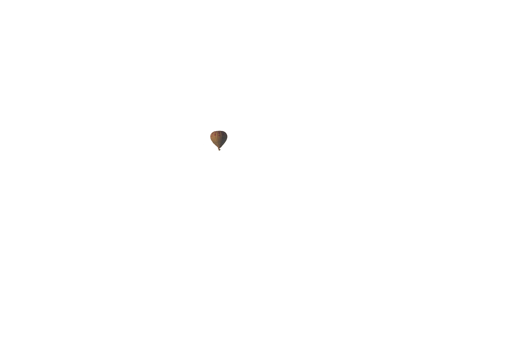
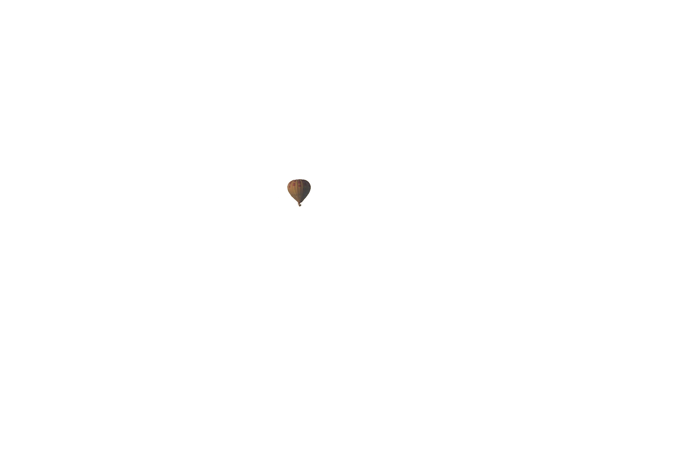
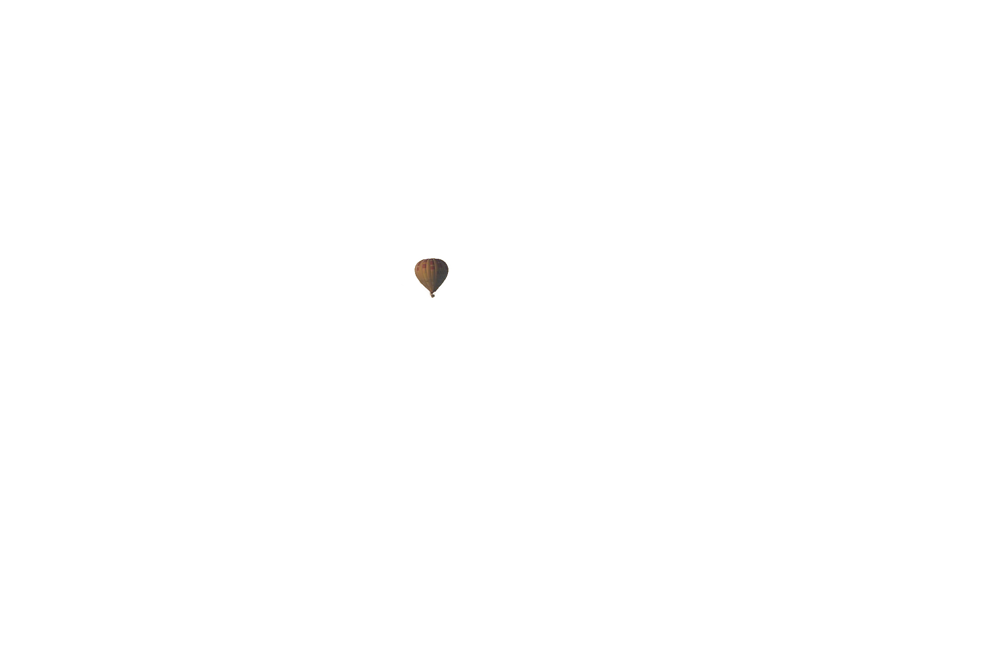
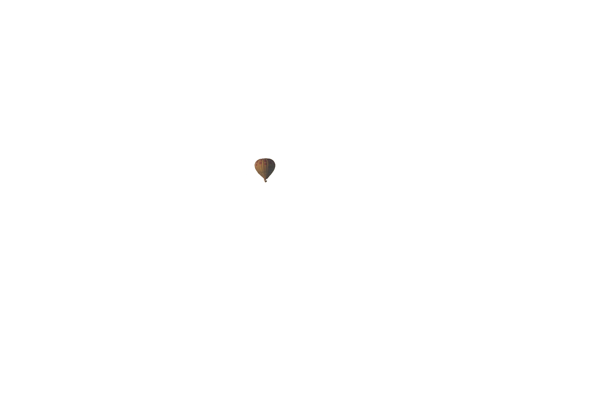

welcome to
Nepex
 
button

button

button

button
Google Fonts makes it easy to bring personality and performance to your websites and products. Our robust catalog of open-source fonts and icons, makes it easy to integrate expressive type and icons seamlessly—no matter where you are in the world.
Discover great typography and iconography
Our font catalog places typography front and center, inviting users to explore, sort, and test fonts for use in more than 135 languages. We showcase individual type designers and foundries, giving you valuable information about the typographers and their process, as well as analytics on usage and
demographics. Our series of thematic collections helps you discover new fonts that have been vetted and organized by our team of designers, engineers, and collaborators, and our default sort organizes fonts based on popularity, trends, and your geographic location. You can also create your own highly customized collections by filtering families, weights, and scripts, plus test color themes, and review sample copy. Collections can be shared,
making it easy to collaborate on projects and ensure typography is optimized and streamlined throughout the design and engineering process. In 2021, we’ll begin adding icons to our Google Fonts catalog, expanding expressive capability for our users. Our first set will be the Material icons—delightful, beautifully crafted symbols for common communication needs. Download them on desktop to use them in your digital products for Android, iOS, and web.
Collaborate with open source
All the fonts and icons in our catalog are free and open source, making beautiful typography and iconography accessible to anyone for any project. This means you can share favorites and collaborate easily with friends and colleagues. Google Fonts takes care of all the licensing and hosting, ensuring that the latest and greatest version of any font is available to everyone.
Make the web faster
Using the code generated by Google Fonts, our servers will automatically send the smallest possible file to every user based on the technologies that their browser supports. For example, we use WOFF 2.0 compression when available. This makes the web faster for all users—particularly in areas where bandwidth and connectivity are an issue. Now everyone can enjoy the same quality and design integrity in their products and web pages, no matter where they are in the world.
The icon sets that are delivered by Google Fonts benefit from the same infrastructure.
Join our community
We are working with designers around the world to produce best-in-class typeface designs that are made for the web, and because we are open source, this means that we can release early access trials to our community for testing and feedback.
Interested in helping us evolve?
Pitch in and help us grow by signing up for user studies on fonts, emojis, icons, and more.
I'm interested